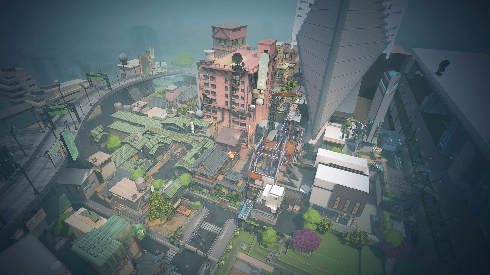

SPLIT
Split es un mapa interesante para jugar, ya que no parece que haya sido diseñado para los simples objetivos de Valorant. El juego consiste en mantener o tomar emplazamientos Spike, por lo que otros mapas de Valorant están diseñados para atacar o defender estos sitios. Sin embargo, Split tiene un término intermedio mucho más sustancioso, que parece estar mejor equipado para algo como Team Deathmatch. Es posible que ese modo, con objetivos diferentes, las tácticas de los mapas cambien. Pero por ahora, tenemos las mejores tácticas para atacar y defender Split aquí mismo.
Las tácticas defensivas tienen más valor aquí que las ofensivas, así que Sage es un agente fuerte para usar en este mapa, aunque eso también te presiona para que lo uses correctamente. Phoenix es un gran agente para pegar fuerte en cualquier esquina, gracias a su habilidad de flashbang, por lo que es una gran elección cuando se trata de superar a los defensores.
